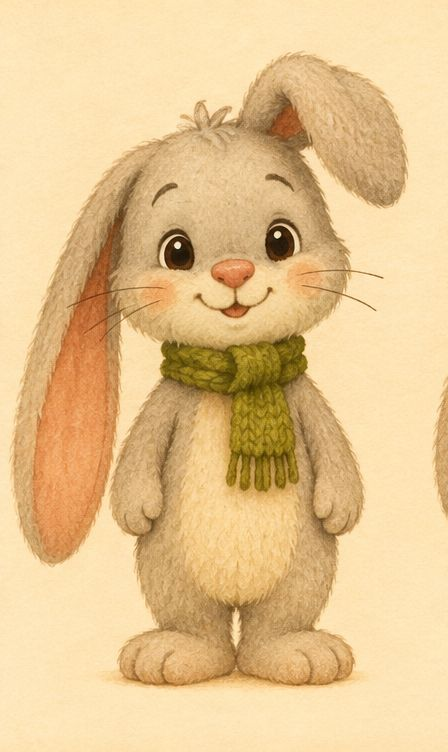
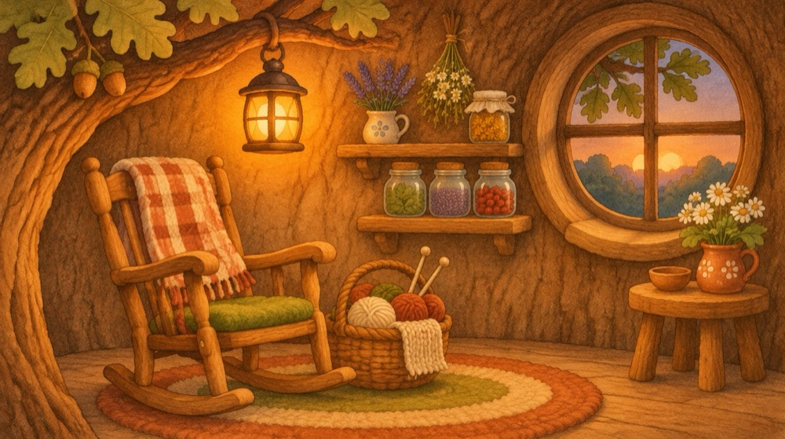

Bez strachu a napětí
I noc je v Doupátkově modrá a laskavá. Žádné záporáky, žádné lekačky před spaním.

Animovaný seriál pro předškoláky
Klidné příběhy z vesničky ve starém dubu. Žádné strašení, žádný spěch – jen malé dětské starosti, laskaví kamarádi a vždycky dobrý konec.
O seriálu
Ve starém dutém dubu je schovaná útulná vesnička Doupátkov. Bydlí v ní zvídavý zajíček Ouško se svými kamarády. Každý díl přináší jednu jednoduchou situaci, kterou malé dítě samo zná – strach ze tmy, dělení se o hračky, nového kamaráda nebo bouřku za oknem.
Seriál je pomalý a měkký v duchu klasických večerníčků. Poučení nikdo nevykřikuje nahlas – děti na něj přijdou samy, spolu s Ouškem.
I noc je v Doupátkově modrá a laskavá. Žádné záporáky, žádné lekačky před spaním.
Sdílení, žárlivost, omluva, čištění zoubků. Témata, která dítě právě zažívá.
Každý díl končí písničkou Cvrčka Notičky a pocitem, že všechno je zase v pořádku.
Postavy
Jen pár kamarádů, ať si je i ti nejmenší snadno zapamatují.

zvídavý zajíček · hlavní hrdina
Na svět se dívá s úžasem a všechno chce vyzkoušet. Občas udělá chybu, ale vždycky se z ní něco naučí.

moudrá ježčí babička
Plete v houpacím křesle, vaří bylinkový čaj a ví, co dělat, když se něco nedaří. S lucerničkou ji nic nevyleká.

nemotorné, ale hodné medvídě
Silák s velkým srdcem. Rád jí, rád spí a při schovávané se schová za kytičku.

drobný muzikant
Veselá kopa, která všechno vyřeší písničkou. Jeho housličky zahrají na konci každého dílu.

trochu rošťačka
Všimne si úplně všeho. Přišla do Doupátkova jako nová kamarádka a učí ostatní, co je fér.
Svět
Kulaté, měkké a teplé. Okrová, mechová zelená a terakota – jako by celý les byl upletený z vlny.



Díl 1 · 10 minut
Ouško si hraje s Brumlou na louce, dokud se nesetmí. Doma mu zhasne svíčka a na stěně se objeví veliký stín s dlouhýma ušima. Babča Ježka s ním vezme lucerničku a vydá se na tmu podívat. A ukáže se, že všechno má laskavé vysvětlení.
„Tma je jen čas, kdy les spí.“Babča Ježka
Díly
Vyberte téma, které vaše dítě zrovna řeší, nebo vyhledejte díl podle názvu.
Takový díl jsme nenašli. Zkuste jiné slovo. 🦔
Pro rodiče
Každý díl má stejný klidný rytmus. Děti vědí, co přijde, a to jim dává jistotu.
30 s
Kdo, kde a o čem dnes bude řeč.
6–7 min
Jednoduchý problém, který postava řeší po svém.
1–2 min
Jemné poučení, nikdy nahlas ani s prstem nahoře.
30 s
Cvrček Notička zahraje a všichni se rozloučí.